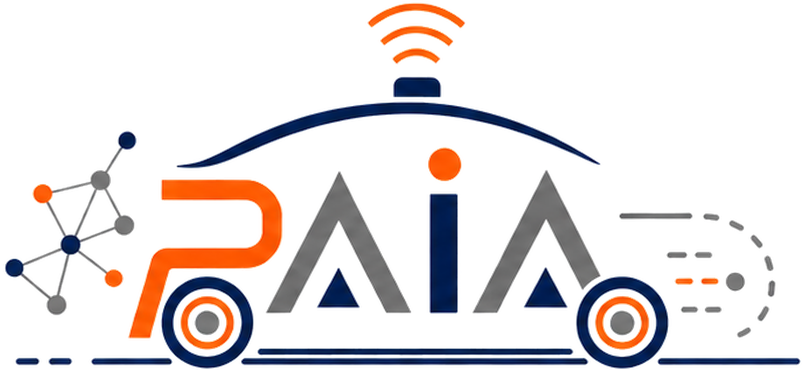
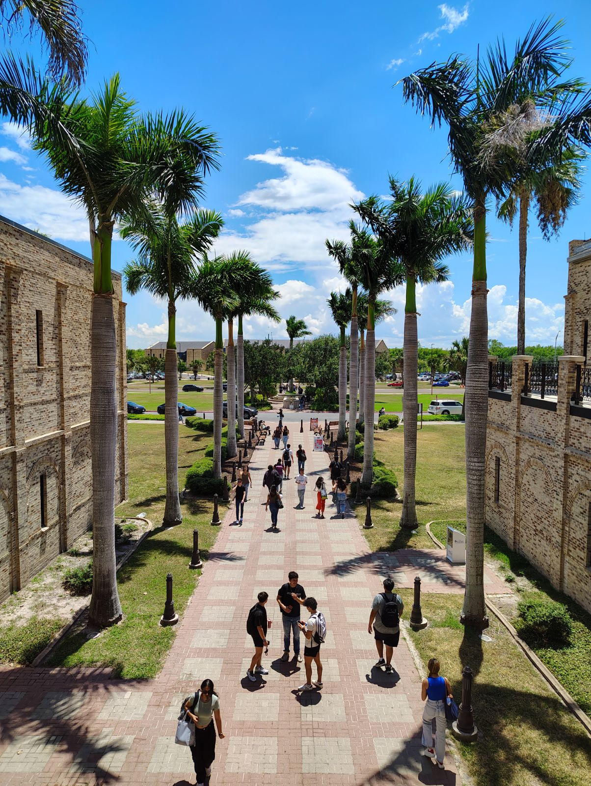
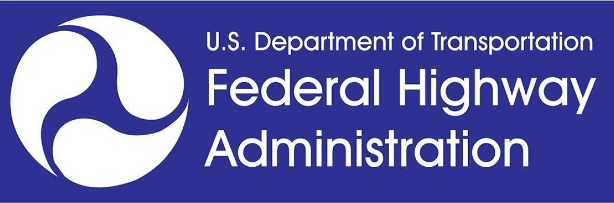

PI award from Maryland DOT SHA
Awarded a $150K research project as PI through M-TRAIL, funded by the Maryland Department of Transportation SHA.

Perception, AI, and Autonomy Lab
Department of Electrical and Computer Engineering
The University of Texas Rio Grande Valley
The Perception, AI, and Autonomy Lab (PAIA Lab) is a research group in the Department of Electrical and Computer Engineering at The University of Texas Rio Grande Valley. Our work focuses on perception, artificial intelligence, and autonomy for systems that must operate reliably in complex and uncertain real-world environments.
We study the full perception–understanding–decision loop, from multimodal sensing and sensor fusion to scene understanding, prediction, control, and planning. Current research includes autonomous driving and intelligent transportation, robotics and physical AI, multimodal foundation models, world models, and reliable and safety-aware AI.
We expect the autonomous systems of the coming decade to rest on models that carry far broader knowledge of the physical world than today's task-specific pipelines do. Our interest is in how such models can be held accountable to physical evidence, so that geometry and measurement uncertainty shape what a model is allowed to conclude, and so that a system can tell where its own understanding runs out instead of failing quietly.

Awarded a $150K research project as PI through M-TRAIL, funded by the Maryland Department of Transportation SHA.
CalibRefine accepted to IEEE Transactions on Instrumentation and Measurement.
Radar-camera fused multi-object tracking accepted to IEEE Transactions on Intelligent Transportation Systems.
Dr. Lei Cheng joined the University of Maryland, College Park as a Faculty Assistant in CEE / MTI.
We study perception using camera, radar, LiDAR, GNSS, and other sensing modalities, with emphasis on calibration, sensor fusion, uncertainty, robustness, and operation under sensor degradation.
We investigate multimodal and foundation models that combine sensor observations, geometry, motion, language, and semantics for physically grounded scene understanding and autonomous reasoning.
We study how perception and uncertainty can inform prediction, control, and planning for autonomous driving, intelligent transportation, robotics, and other physical autonomous systems.
We gratefully acknowledge the agencies and industry partners that have supported research projects the PI has contributed to.

